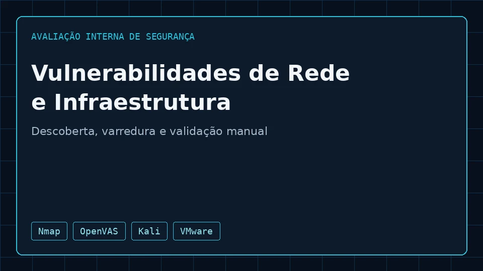
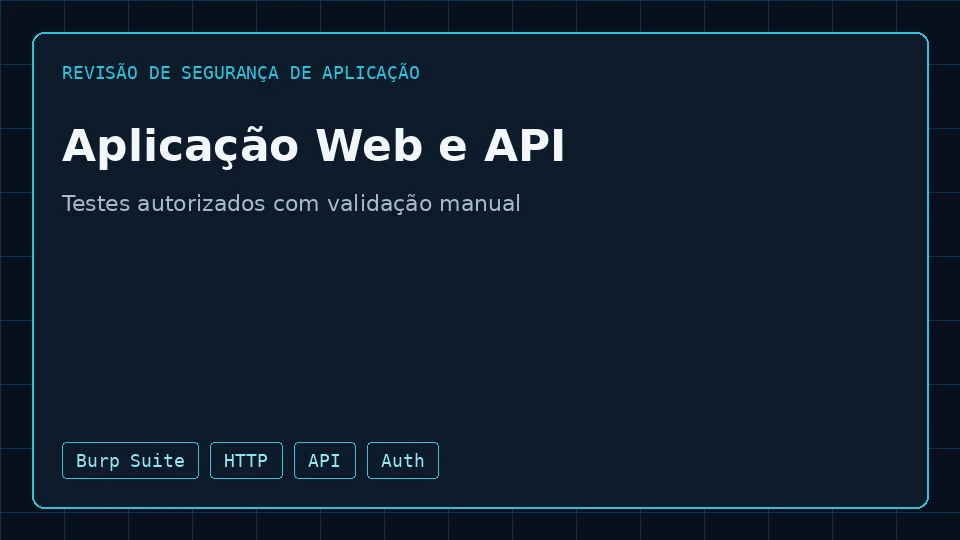

Documentado
Extensão maliciosa no Chrome
Investigação de persistência por política do navegador e plano de resposta.
Abrir estudo →Estudos documentados
Trabalhos apresentados com metodologia, resultados, limitações e privacidade adequada.
Investigação de persistência por política do navegador e plano de resposta.
Abrir estudo →
Nmap, Greenbone/OpenVAS, Kali Linux e validação manual em escopo autorizado.
Abrir estudo →
Mapeamento e testes manuais com Burp Suite em aplicação e API.
Abrir estudo →